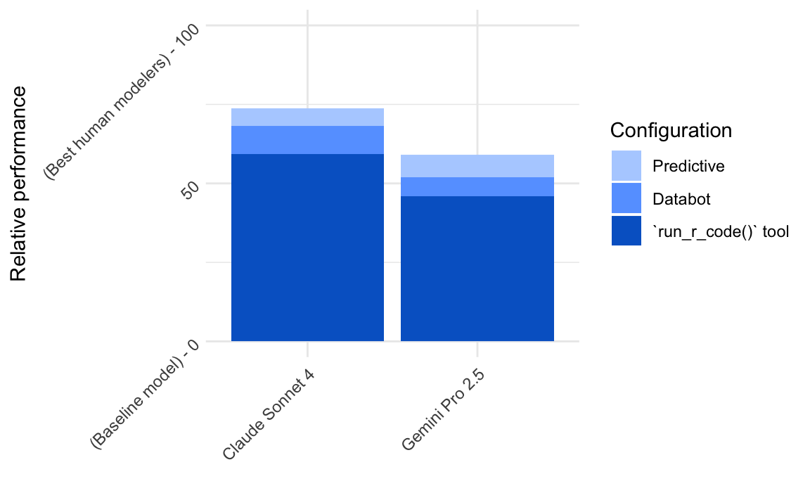
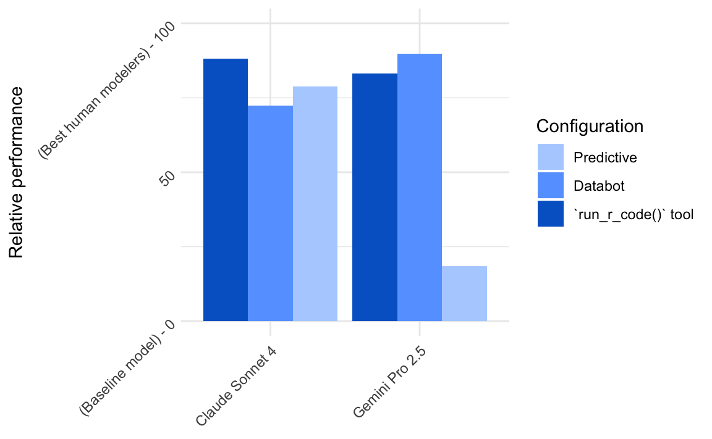

One of my most visceral memories of my first interactions with LLMs was asking that first release of ChatGPT in late 2022 to write code to fit a linear regression with tidymodels. The model hallucinated a function tidymodels::install_tidymodels() again and again. That function does not exist. If it did, there’d be some serious chicken and egg happening. This thing was goofy.
A year or two went by. Around this time last year, I started engaging with LLMs more seriously. At the time, I found that the modern frontier LLMs at the time “just knew” tidyverse in a way that they didn’t with tidymodels. Those LLMs might not have been up to date with the newest syntax, but by and large, I didn’t need to paste in a bunch of documentation on tidyverse in order to use those LLMs to write tidyverse code. This was not the case with tidymodels, though; at the time, I felt that LLMs required a good bit of prompting in order to write tidymodels code fluently.
In working on a tidymodels assistant in recent months, I had been under the assumption that this was still the case. Now that I’ve put together some evals to measure the assistant’s performance, though, I realize this is no longer the case; today’s frontier LLMs “just know” tidymodels.
Enter Databot
Posit just announced a research preview feature in Positron called Databot. It’s a data analysis assistant that can see your global environment and run R code inside of it via a tool run_r_code(). Databot works in short bursts, keeping the analyst in the loop and deferring to them on what directions to head next. It’s pretty remarkable; if you haven’t tried it out, I highly recommend giving it a whir.
Coming from the tidymodels team, my first question when I saw the early prototypes of Databot early this year was “how good is this thing at developing ML models?” Specifically, was Databot a proficient tidymodels user?
Immediately, I ran into issues.
- LLMs would make silly mistakes when writing tidymodels code, again and again.
- An assumption under the hood in Databot is that code that the assistant passes to
run_r_code()will execute relatively quickly; if you’re just filtering out rows or creating plots, it’s safe to assume in many situations that results will come back quickly. This is not the case with modeling code; resampling even simple model fits on datasets as small as tens of thousands of rows can take several minutes. In that case, as an analyst, you’re just staring at a dial spinning. No good.
So, I’ve been experimenting with what Databot might feel like in a “predictive modeling mode.” The proof of concept is called Predictive. The main difference between Databot and Predictive is 1) a shitton of prompting to provide context on tidymodels and 2) a tool called run_experiment().
Prompting
In thinking through how to “teach” LLMs how to use tidymodels (or any other package), there’s a tradeoff between completeness and cost. Provide too much context and you’re paying too much, provide too little context and LLMs won’t actually be able to use the packages.
At its most minimal, I needed to provide high-level context on using tidymodels: what are model specifications? Recipes? Workflows? I wrote these bits of context myself. For example, on model specifications:
R code that returns a parsnip model specification. For example, to specify a linear regression:
linear_reg()Or, to use a different engine and set some arguments:
linear_reg(penalty = .1) |> set_engine("glmnet")To tune argument values, set their value to
tune():linear_reg(penalty = tune()) |> set_engine("glmnet")When using a model type with an ambiguous mode, be sure to set it explicitly:
decision_tree() |> set_mode("regression")In all of the above cases, the triple backticks are for example only and should not be included in the argument specification.
Then, I wanted to provide context to prevent the most common failure modes, like hallucinating possible modeling engines for a given model type, misspelling an argument name, or thinking that a modeling engine supports a modeling mode that it doesn’t. To do so, for each model type, I concatenated all of the documentation for that model type together and then presented it to an LLM, asking for a specific, information-dense output format. So, for example, the documentation for the modeling function linear_reg() looked like this:
linear_reg()Linear regression models fit a linear relationship between predictors and a numeric outcome. Fast to fit and interpret.
Arguments:
penalty: Amount of regularization. tune.mixture: Proportion of L1 regularization (0=ridge, 1=lasso). tune.Engines:
lm(regression): Standard OLS implementation. Fast and interpretable.brulee(regression): Efficient GPU-accelerated implementation.gee(regression): For correlated data. Requires multilevelmod extension.glm(regression): Similar to lm but with flexibility for non-gaussian distributions.glmer(regression): For mixed effects models with grouped data. Requires multilevelmod extension.glmnet(regression): Best for high-dimensional data with many predictors.quantreg(quantile regression): For modeling conditional quantiles rather than means.spark(regression): For big data that doesn’t fit in memory.stan(regression): Bayesian implementation with uncertainty estimates.
I did the same for all recipes and all possible steps, too.
Altogether, this resulted in something like 20,000 tokens of very, very dense documentation on modeling functionality available in tidymodels.
The run_experiment() tool
In addition to the extra prompting, Predictive has one more tool beyond Databot’s run_r_code(). It’s sort of like run_r_code(), but it’s tuned specifically for running tidymodels modeling code:
- Every time an LLM wants to run code that fits ML models with tidymodels (like
fit(),tune_grid(), etc), it will run that code inside ofrun_experiment()rather thanrun_r_code(). -
run_experiment()makes use of “hooks” inside of tidymodels that allow the Predictive app to track execution progress and resulting performance metrics. -
run_experiment()can run asynchronously. Normally, with therun_r_code()tool, the LLM would choose to run code, then that code would run in the R session, and only when that code finished running would the tool return the results to the LLM.run_experiment()works differently—when the tool is called, it launches a mirai to run the modeling code and then immediately returns with a string like “Got it—your modeling code is running. You will be notified when it finishes.” Once modeling code finishes running, the next time an HTTP request is sent to the LLM (either for some other tool result or when a user sends a message), the results of the modeling code are presented to the LLM.
This means that, when an LLM runs modeling code, the Predictive app stays responsive for the user. The additional “hooks” also mean that we can introduce custom UI that allow users to track execution, view bespoke result summaries, stop undesired modeling experiments, and compile information across many experiments to determine whether changes to modeling code result in more performant fits. This makes the Databot experience much more pleasant when building predictive models.
Evaluating Predictive
So, this proof of concept for a predictive modeling mode for Databot is working pretty well. Some months go by as I’m building it, with LLM releases from Anthropic, Google Gemini, and OpenAI, all of which make the experience of using Predictive even better.
How can I measure how well this thing works, though? On and off this last month, I’ve been poking at an eval that aims to measure 1) how much better Predictive is at predictive modeling than Databot itself, and 2) how well a given LLM does at powering the Predictive app. It’s been quite the engineering lift, but I finally got it to a point where I could run some initial samples a couple weeks ago.
So, I ran this evaluation against three configurations:
-
run_r_code()tool only: Situate an LLM inside of a directory and give it the ability to run R code. - Databot: In addition to running R code, the model is prompted with the same prompt that is provided to Databot.
- Predictive: The model is further prompted with a bunch of information on how tidymodels works as well as the
run_experiment()tool.
In my mockup of how I’d plot the results I put together while the eval was running, I expected the results to look something like this:
I expected that only supplying a run_r_code() tool would provide some baseline performance, then Databot’s prompting would provide a bit more of a boost, and then Predictive’s additional prompt and run_experiment() tool would seal the deal. I even used position = "identity" because I was so confident about this; since the scores from Predictive would be greater than from Databot, I could just plot them on top of each other.
Once the initial round of results came in, I discovered that my use of position = "identity" in the above was overoptimistic, to say the least.

With Claude Sonnet 4, the results were a bit of a wash; providing a run_r_code() tool was all that the LLM needed to do it’s thing. Additional prompting from Databot and all of the prompting and tooling from Predictive were no help. In the run_r_code() eval, Sonnet “chose” to use tidymodels in its solutions, and did so fluently. This didn’t totally blindside me, but I was surprised to see Claude Sonnet 4 “just knew” tidymodels.
Then the results for Gemini Pro 2.5 came in. Holy smokes. Not only did Predictive’s run_experiment() tool not help Gemini Pro 2.5 develop ML models, but it hurt its performance significantly. The LLM struggled with setting the tool arguments appropriately and, awash in more context tokens than it needed, sometimes failed to present its best ML model with the appropriate formatting (resulting in scores of 0).
In reading these results, I realized that I was wrong about how well modern frontier LLMs know tidymodels. There was no need to provide those carefully crafted 20,000 tokens of context and, worse than that, doing so actually hurt performance.
After sitting with the results for a couple minutes, I was quite happy to be wrong. Passing along an extra 20,000 input tokens with every request is expensive1 and results in hitting rate limits much more often; in removing all those extra tokens, the resulting app can be much cheaper for users.
From here
I wrote earlier that my first goal in working on this eval was to measure “how much better Predictive is at predictive modeling than Databot itself.” From this first experiment, I learned that it’s no better at all. Check.
The second goal was to measure “how well a given LLM does at powering the Predictive app.” Even though I’ve learned that all of that extra context is not actually needed, it’s still true that the run_experiment() tool is needed. I initially introduced that tool not to improve the predictive performance of outputted ML models, but to make the experience of developing them better for the user. Without the additional structure provided by run_experiment(), and the improvements in UX that result from it, using Databot for predictive modeling is a bummer. So, the question I’ll focus on using this eval to answer, now, is this second one; given that asynchronous execution and known “hooks” into modeling code are needed to make predictive modeling with an LLM assistant pleasant, how well can a given LLM do at making use of that tool structure?
In the coming weeks, I’m hoping to tighten up a few more components of this eval. After I do, we can use it to 1) determine which LLMs we can officially support as capable of powering this application, and also 2) write about new LLM releases as they come out. I’m designing this eval to look as close to my real-world interactions with LLMs as possible, in hopes that I can use the results of the eval as a much higher-signal benchmark for whether I’ll find some LLM useful than the sorts of evals that tend to live in release posts from AI labs.
Also, keep an eye out for a proper integration of similar capabilities into Databot. For now, Predictive is a fork of the Databot proof of concept that’s implemented as a Shiny app; we’re hoping to implement these predictive modeling-focused features into the real deal in the coming months.
Footnotes
Claude Sonnet 4 is $3 per million input tokens, so 20,000 input tokens is $3 x .02 = 6 cents per request. (This ignores the cache hit rate, but we’re already in the footnotes.) It’s not uncommon for this app to make 100 or more requests while developing an ML model.↩︎